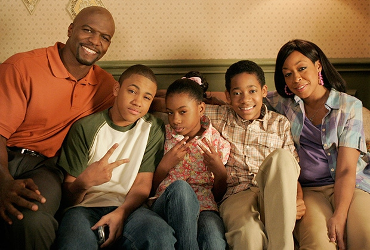

Todo Mundo Odeia o Chris
Everybody Hates Chris
Sobre a série
Todo Mundo Odeia o Chris ou Everybody Hates Chris é uma série inspirada na vida do ator e comediante Chris Rock, quando ainda morava no bairro Bedford-Stuyvesant, também conhecido como Bed-Stuy, durante a década de 1980. A região fica localizada no centro do Brooklyn no Condado de Kings, Nova Iorque, sendo que a infância de Chris Rock na verdade foi entre os anos 1978 e 1984, mas os produtores acharam melhor que a série se passasse entre 1982 e 1987. Segundo eles, o período poderia ser melhor explorado com relação às referências pop, além de já haver outra série de muito sucesso na época, que se passava nos anos 70, chamada That ’70s Show.
Na vida real, o comediante tem seis irmãos, sendo eles, Brian, Kenny, Andi, Jordam, Andrew e Tony. Contudo, apenas os dois últimos foram utilizados como inspirações para Drew e Tonya na série, uma vez que na realidade, Tonya era um menino. Chris Rock estudou em uma escola pública com uma vizinhança predominantemente branca e assim como na ficção, sofreu vários episódios de racismo por ser um dos únicos garotos negros.
Enredo
A história se passa no Brooklyn em Nova Iorque quando a família de Chris se muda de um conjunto habitacional para uma casa no bairro de Bed-Stuy, que é conhecido pelo ditado: Bed-Stuy, só doido vai. Sua mãe, Rochelle, é uma mulher autoritária que tenta manter a família toda na linha e seu maior medo é que seus filhos usem drogas ou acabem entrando para o crime. Ela vive pedindo demissão de seus empregos e se gaba por seu marido ter dois empregos. Seu pai, Julius, é um homem trabalhador, que luta pelo sustento de sua família tendo dois empregos. Ele odeia gastar dinheiro além do extremamente necessário, fato que se tornou sua marca registrada. Chris tem 13 anos, sendo o filho mais velho de Julius e Rochelle, e seu irmão se chama Drew, um garoto atlético e bonito que sempre é paquerado pelas garotas. A caçula Tonya, é fã do cantor Billy Ocean e tem prazer em infernizar a vida dos irmãos. Rochelle decide que Chris deve estudar em uma escola fora de Bed-Stuy, acreditando que o garoto terá melhores oportunidades na vida. Por isso ele começa a cursar o sétimo ano na “Escola Secundária Corleone”. O problema é que o Colégio é muito longe de sua casa e além disso é frequentado apenas por alunos brancos. Temos que deixar claro que tudo isso se passa em uma época onde o racismo estava em seu auge nos Estados Unidos.
O cancelamento da série
Os motivos para o cancelamento da série ainda são incertos, mas rumores apontam para que tenha sido por causa da baixa audiência na emissora The CW. Outra explicação se deve ao fato de que, como 1988 foi o ano em que Julius Rock faleceu na vida real, não havia sentido em incluir isso na série e tão pouco continuá-la sem o personagem. Everybody Hates Chris teve quatro temporadas, exibidas originalmente nos Estados Unidos entre setembro de 2005 a maio de 2009, pelos canais de televisão The CW Television Network e United Paramount Network. A série também foi reprisada nos canais pagos Nick at Nite, MTV2, VH1 e BET e por lá, a série completa está disponível nos serviços de streaming Hulu, CBS All Access, CW Seed e no iTunes Store. No Brasil, Todo Mundo Odeia O Chris foi exibida inicialmente pelo canal Sony e posteriormente na Record TV, TBS, e no Comedy Central, deixando de ser exibida na Record em setembro de 2017 e retornando em janeiro de 2019.
